# load Python modules
import numpy as np
import pandas as pd
import seaborn as sns
import matplotlib.pyplot as plt
%config InlineBackend.figure_format = 'retina'
from ministats import generate_pdf_panel
from ministats import plot_pdf
from ministats import plot_pdf_and_cdf
# Figures setup
plt.clf() # needed otherwise `sns.set_theme` doesn't work
from plot_helpers import RCPARAMS
RCPARAMS.update({'figure.figsize': (10, 3)}) # good for screen
# RCPARAMS.update({'figure.figsize': (5, 1.6)}) # good for print
sns.set_theme(
context="paper",
style="whitegrid",
palette="colorblind",
rc=RCPARAMS,
)
# Useful colors
snspal = sns.color_palette()
blue, orange, purple = snspal[0], snspal[1], snspal[4]
# High-resolution please
%config InlineBackend.figure_format = 'retina'
# Where to store figures
DESTDIR = "figures/stats/confidence_intervals"
<Figure size 640x480 with 0 Axes>
def mean(sample):
return sum(sample) / len(sample)
def var(sample):
xbar = mean(sample)
sumsqdevs = sum([(xi-xbar)**2 for xi in sample])
return sumsqdevs / (len(sample)-1)
def std(sample):
s2 = var(sample)
return np.sqrt(s2)
def dmeans(xsample, ysample):
dhat = mean(xsample) - mean(ysample)
return dhat
CUT MATERIAL#
def jackknife(sample, estfunc):
"""
Evaluate the Jackknife estimate of the estimator `estfunc`.
via https://compphysics.github.io/MachineLearning/doc/LectureNotes/_build/html/chapter3.html
"""
n = len(sample)
stats = np.zeros(n)
# Leaving out observations one-by-one
for i in range(n):
stats[i] = estfunc(np.delete(sample,i))
# analysis
print("Jackknife Statistics:")
print("original bias std. error")
print("%8g %14g %15g" % (estfunc(sample), (n-1)*mean(stats)/n, (n*var(stats))**.5))
return stats
Resampling methods for regression#
We can use resampling methods for …
Bootstrap confidence intervals for parameters#
The goal is quantify the uncertainty of the model parameter estimates. We use the bootstrap approach to repeatedly select subsets of the dataset and fit a linear model to obtain their sampling distribution, then construct the confidence intervals from the percentiles of bootstrapped sampling distribution.
np.random.seed(42)
n = doctors.shape[0]
B = 1000
formula = "score ~ 1 + alc + weed + exrc"
lm2 = smf.ols(formula, data=bdoctor).fit()
bparams = np.ndarray( (B,len(lm2.params)))
for i in range(B):
# bootstrap dataset
bdoctors = doctors.sample(n, replace=True)
# fit the model
blm2 = smf.ols(formula, data=bdoctors).fit()
bparams[i] = blm2.params
cis = np.quantile(bparams, [0.025, 0.975], axis=0).T
pd.DataFrame(cis, index=blm2.params.index)
---------------------------------------------------------------------------
NameError Traceback (most recent call last)
Cell In[5], line 3
1 np.random.seed(42)
----> 3 n = doctors.shape[0]
4 B = 1000
6 formula = "score ~ 1 + alc + weed + exrc"
NameError: name 'doctors' is not defined
much wider than the ones produced by statsmodels: WHY?
# cf. model
lm2.conf_int(alpha=0.95)
| 0 | 1 | |
|---|---|---|
| Intercept | 60.290604 | 60.615197 |
| alc | -1.808909 | -1.791294 |
| weed | -1.081487 | -0.961616 |
| exrc | 1.750911 | 1.785666 |
Bootstrap confidence intervals for parameters#
import numpy as np
from sklearn.linear_model import LinearRegression
np.random.seed(0)
# Observed samples
x = np.random.normal(loc=0, size=100)
y = 2 * x + np.random.normal(size=100)
# Observed statistic
model = LinearRegression().fit(x.reshape(-1, 1), y)
observed_statistic = model.coef_[0]
# Bootstrap
bstatistics = []
for _ in range(10000):
bsample_indices = np.random.choice(len(x), size=len(x), replace=True)
bx = x[bsample_indices]
by = y[bsample_indices]
model = LinearRegression().fit(bx.reshape(-1, 1), by)
bstatistic = model.coef_[0]
bstatistics.append(bstatistic)
# Confidence interval
lower = np.percentile(bstatistics, 2.5)
upper = np.percentile(bstatistics, 97.5)
print("Confidence interval:", (lower, upper))
Confidence interval: (1.925367935213949, 2.3061962272629444)
import numpy as np
import matplotlib.pyplot as plt
from mpl_toolkits.mplot3d import Axes3D
from scipy.stats import norm
# Define the linear model function
def linear_model(x):
return 30 + 5 * x
sigma = 5
# Set up the figure and 3D axis
# fig = plt.figure(figsize=(12, 8), layout='compressed')
# ax = fig.add_subplot(111, projection='3d')
fig, ax = plt.subplots(figsize=(12, 8), subplot_kw={'projection': '3d'})
# gridspec_kw=dict(top=1.02, bottom=0.02, left=0, right=1))
# Plot the linear model
x_values = np.linspace(5, 13, 200)
ax.plot(x_values, linear_model(x_values), zs=0, zdir='z', label='Linear Model', color='blue')
# Set labels and adjust the view
ax.set_xlabel('$x$')
ax.set_xticklabels([])
ax.set_xlim([5,13])
ax.set_ylabel('$y$')
ax.set_yticklabels([])
ax.set_ylim([40,110])
# ax.set_zlabel('density')
ax.set_zlim([0,0.06])
ax.view_init(elev=30., azim=-60)
ax.set_box_aspect([1.3, 1, 0.1])
ax.grid(False)
# Define positions for Gaussian distributions and sigma
x_positions = [6, 7, 8, 9, 10, 11, 12]
from matplotlib.collections import PolyCollection
for x_pos in x_positions:
y_pos = linear_model(x_pos)
ys = np.linspace(y_pos-4*sigma, y_pos+4*sigma, 100)
fYs = norm(loc=y_pos, scale=sigma).pdf(ys)
verts = [list(zip(np.pad(ys, 1, mode='edge'), np.pad(fYs, 1)))]
poly = PolyCollection(verts, facecolors="k")
poly.set_alpha(0.2)
ax.add_collection3d(poly, zs=x_pos, zdir='x')
filename = os.path.join(DESTDIR, "linear_model_3d.pdf")
savefigure(fig, filename)
Saved figure to figures/lm/simple/linear_model_3d.pdf
Saved figure to figures/lm/simple/linear_model_3d.png
{kind=link}
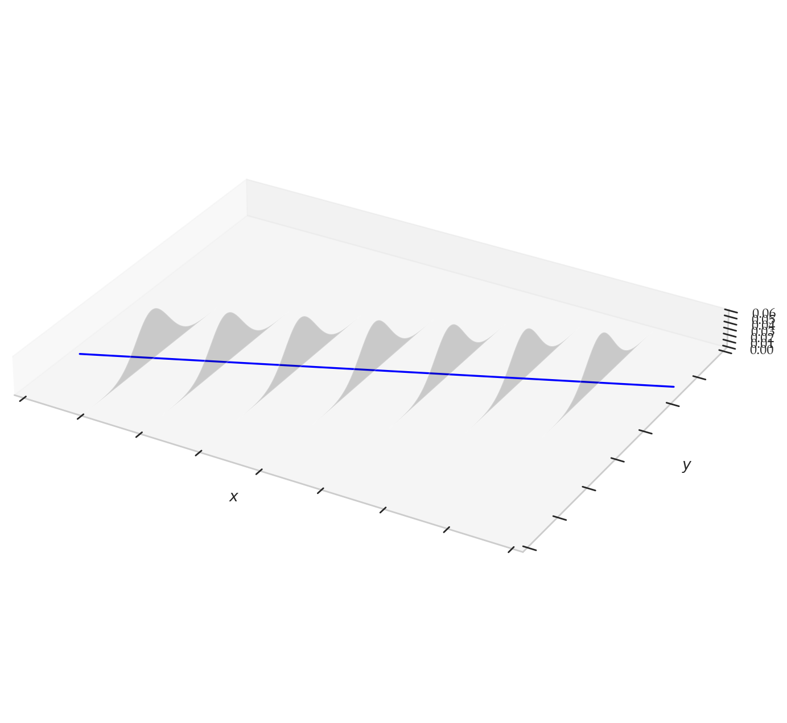
Grouping and aggregation#
players = pd.read_csv("../datasets/players.csv")
players.groupby("ezlvl")
<pandas.core.groupby.generic.DataFrameGroupBy object at 0x134e62850>
players.groupby("ezlvl")["time"]
<pandas.core.groupby.generic.SeriesGroupBy object at 0x134f605b0>
players.groupby("ezlvl")["time"].mean()
ezlvl
0 242.173333
1 257.341667
Name: time, dtype: float64
print(players.groupby("ezlvl")["time"].aggregate(["sum", "mean"]))
sum mean
ezlvl
0 1453.04 242.173333
1 1544.05 257.341667
Side note about long Python expressions#
# OPTION 1: newline continuation character
players.groupby("ezlvl")["time"] \
.agg(["sum", "mean"])
| sum | mean | |
|---|---|---|
| ezlvl | ||
| 0 | 1453.04 | 242.173333 |
| 1 | 1544.05 | 257.341667 |
# OPTION 2: expression inside parentheses
(players
.groupby("ezlvl")["time"]
.agg(["sum", "mean", "max"])
)
| sum | mean | max | |
|---|---|---|---|
| ezlvl | |||
| 0 | 1453.04 | 242.173333 | 408.76 |
| 1 | 1544.05 | 257.341667 | 381.97 |
NEW
Use the option permutations=10000 to perform a permutation test.
np.random.seed(42)
pval = ttest_ind(pricesW, pricesE, permutations=10000).pvalue
print("expected", pval)
# PERMUTATION T-TEST MANUAL VERIFICATION
np.random.seed(42)
nW, nE = len(pricesW), len(pricesE)
stdW, stdE = std(pricesW), std(pricesE)
seD = np.sqrt(stdW**2/nW + stdE**2/nE)
dprice = dmeans(pricesW, pricesE)
obst = (dprice - 0) / seD
# 2. Obtain the sampling distribution under H0
P = 10000
pts0 = []
for i in range(0, P):
ps1, ps2 = resample_under_H0(pricesW, pricesE)
std1, std2 = std(ps1), std(ps2)
pseD = np.sqrt(std1**2/nW + std2**2/nE)
pdprice = dmeans(ps1, ps2)
pt0 = (pdprice - 0) / pseD
pts0.append(pt0)
tails = tailvalues(pts0, obst)
pvalue_ttest = len(tails) / len(pdhats0)
pvalue_ttest
expected 0.00029997000299970003
0.0002
# OLD TRIPLE FIGURE FROM SEC 3.3 BEFORE SPLIT
filename = os.path.join(DESTDIR, "panel_hist_p-values_left_twotailed_right_tests.pdf")
from ministats import tailvalues
from scipy.stats import t as tdist
rvT = tdist(df=9)
xs = np.linspace(-4, 4, 1000)
ys = rvT.pdf(xs)
N = 100000
np.random.seed(42)
ts = rvT.rvs(N)
bins = nicebins(xs, 2, nbins=50)
with plt.rc_context({"figure.figsize":(9,2.3)}), sns.axes_style("ticks"):
fig, (ax3, ax1, ax2) = plt.subplots(1, 3, sharey=True)
ax3.set_ylabel("$f_{\widehat{\Theta}_0}$")
# RIGHT
title = '(a) right-tailed test'
ax3.set_title(title, fontsize=13)
sns.histplot(ts, ax=ax3, bins=bins, alpha=0.3)
ax3.set_xlim(-4, 4)
ax3.set_xticks([2])
ax3.set_xticklabels([])
ax3.set_yticks([])
ax3.spines[['right', 'top']].set_visible(False)
# highlight the right tail
tailvalues3 = [t for t in ts if t >= 2]
sns.histplot(tailvalues3, bins=bins, ax=ax3, color="red")
ax3.text(2, -300, "$\hat{\\theta}_{\mathbf{x}}$", verticalalignment="top", horizontalalignment="center")
# LEFT
title = '(b) left-tailed test'
ax1.set_title(title, fontsize=13)
sns.histplot(ts, ax=ax1, bins=bins, alpha=0.3)
ax1.set_xlim(-4, 4)
ax1.set_xticks([-2])
ax1.set_xticklabels([])
ax1.set_yticks([])
ax1.set_ylabel("")
ax1.spines[['left', 'right', 'top']].set_visible(False)
# highlight the left tail
tailvalues1 = tailvalues(ts, -2, alt="less")
sns.histplot(tailvalues1, bins=bins, ax=ax1, color="red")
ax1.text(-2, -300, r"$\hat{\theta}_{\mathbf{x}}$", va="top", ha="center")
# TWO-TAILED
title = '(c) two-tailed test'
ax2.set_title(title, fontsize=13)
sns.histplot(ts, ax=ax2, bins=bins, alpha=0.3)
ax2.set_xlim(-4, 4)
ax2.set_xticks([-2,0,2])
ax2.set_xticklabels([])
ax2.set_yticks([])
ax2.spines[['left', 'right', 'top']].set_visible(False)
# highlight the left and right tails
tailvalues2 = [t for t in ts if t <= -2 or t >= 2]
sns.histplot(tailvalues2, bins=bins, ax=ax2, color="red")
ax2.text(-2, -300, r"$\theta_0$-dev", va="top", ha="center")
ax2.text(2, -300, r"$\theta_0$+dev", va="top", ha="center")
ax2.text(0, -300, r"$\theta_0$", va="top", ha="center")
savefigure(fig, filename)
---------------------------------------------------------------------------
NameError Traceback (most recent call last)
Cell In[1], line 2
1 # OLD TRIPLE FIGURE FROM SEC 3.3 BEFORE SPLIT
----> 2 filename = os.path.join(DESTDIR, "panel_hist_p-values_left_twotailed_right_tests.pdf")
3 from stats_helpers import tailvalues
4 from scipy.stats import t as tdist
NameError: name 'os' is not defined
Hypothesis testing decision rule#
#######################################################
def getdecision(pvalue, alpha=0.05):
"""
Check if `pvalue` is less than or equal to `alpha`.
"""
if pvalue < alpha:
# The observed statistics is unlikely to have
# occurred under the null hypothesis
print("reject H0")
else:
# The observed statistics could have occurred
# under the null hypothesis
print("retain H0")
^ The above can be used as a lead-in to introduce the p-value problems…
Advanced bootstrap methods#
# Parametric boostrap 1: assume normal model for the population
avars_boot = gen_boot_dist(asample, estfunc=var)
n = asample.count()
abar = mean(asample)
astd = std(asample)
rvNS2 = norm(abar, astd)
from ministats import gen_sampling_dist
avars_pboot1 = gen_sampling_dist(rvNS2, estfunc=var, n=n)
sns.histplot(avars_pboot1, bins=30)
[np.percentile(avars_pboot1,5),
np.percentile(avars_pboot1,95)]
[211.43896604814086, 506.76570124346426]
{kind=link}
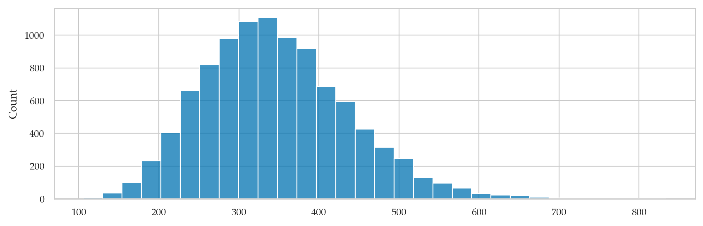
# Parametric boostrap 2: direct modelling of var using scaled chi-square model
# This is a random idea based on Example 4 in cut_material/discovering_estimator_formulas.tex
avars_boot = gen_boot_dist(asample, estfunc=var)
n = asample.count()
df = n-1
scale = var(asample) / (n-1)
from scipy.stats import chi2
rvS2 = chi2(df=df, scale=scale)
from ministats import gen_sampling_dist
avars_pboot2 = rvS2.rvs(5000)
sns.histplot(avars_pboot2, bins=30)
[np.percentile(avars_pboot2,5),
np.percentile(avars_pboot2,95)]
[212.76908831801552, 511.8854254249474]
{kind=link}
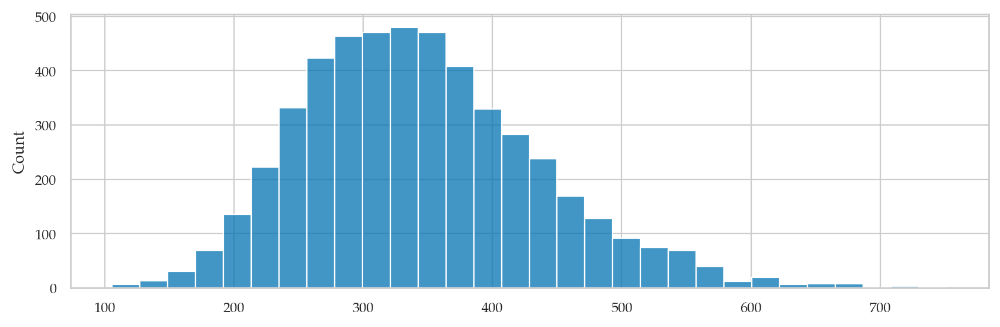
# Basic bootstrap (a.k.a. reversed)
from scipy.stats import bootstrap
np.random.seed(53)
res = bootstrap((asample,), statistic=var,
confidence_level=0.9, n_resamples=5000,
vectorized=False, method="basic")
# sns.histplot(res.bootstrap_distribution, bins=30)
[res.confidence_interval.low,
res.confidence_interval.high]
[211.122988505747, 495.557011494253]
var tests#
# ALT1. use the `bootstrap` function from `scipy.stats`
from scipy.stats import bootstrap
np.random.seed(53)
res = bootstrap((asample,), statistic=var,
confidence_level=0.9, n_resamples=5000,
vectorized=False, method="percentile")
[res.confidence_interval.low,
res.confidence_interval.high]
# ALT2. use the `compute_bootci` function from `pingouin`
from pingouin import compute_bootci
compute_bootci(asample, func=var,
confidence=0.9, n_boot=5000,
method="per", seed=53)
array([193.13, 487.84])
## Bootstrap difference between means under the hood
# from scipy.stats import bootstrap
# np.random.seed(45)
# res = bootstrap((pricesW, pricesE), statistic=dmeans,
# vectorized=False, confidence_level=0.9,
# n_resamples=10000, method='percentile')
# [res.confidence_interval.low,
# res.confidence_interval.high]
Computing two-sample t-test \(p\)-values (generic)#
CUT in favour of showing details in examples
# FOR TESTING PURPOSES
eprices = pd.read_csv("../datasets/eprices.csv")
pricesW = eprices[eprices["loc"]=="West"]["price"]
pricesE = eprices[eprices["loc"]=="East"]["price"]
xsample, ysample = pricesW, pricesE
---------------------------------------------------------------------------
NameError Traceback (most recent call last)
Cell In[2], line 2
1 # FOR TESTING PURPOSES
----> 2 eprices = pd.read_csv("../datasets/eprices.csv")
3 pricesW = eprices[eprices["end"]=="West"]["price"]
4 pricesE = eprices[eprices["end"]=="East"]["price"]
NameError: name 'pd' is not defined
from ministats import calcdf
from scipy.stats import t as tdist
n, m = len(xsample), len(ysample)
xbar, ybar = mean(xsample), mean(ysample)
sx, sy = std(xsample), std(ysample)
obsdhat = dmeans(xsample, ysample)
seD = np.sqrt(sx**2/n + sy**2/m)
df = calcdf(sx,n,sy,m)
rvTDhat0 = tdist(df, loc=0, scale=seD)
pvalue = tailprobs(rvTDhat0, obsdhat, alt="two-sided")
pvalue
obst = (obsdhat - 0) / seD
rvT0 = tdist(df, loc=0, scale=1)
pvalue = tailprobs(rvT0, obst, alt="two-sided")
pvalue
---------------------------------------------------------------------------
NameError Traceback (most recent call last)
Cell In[3], line 1
----> 1 obst = (obsdhat - 0) / seD
2 rvT0 = tdist(df, loc=0, scale=1)
3 pvalue = tailprobs(rvT0, obst, alt="two-sided")
NameError: name 'obsdhat' is not defined
Pooled variance calculations#
varp = ((n-1)*sx**2 + (m-1)*sy**2) / (n+m-2)
stdp = np.sqrt(varp)
seDp = stdp * np.sqrt(1/n + 1/m)
obstp = (obsdhat - 0) / seDp
dfp = n + m - 2
rvT0p = tdist(dfp)
pvalue = tailprobs(rvT0p, obstp, alt="two-sided")
pvalue
0.0001249706798767125
Combined picture for CASE 1: centred around the population mean#
norm(mu_K, seKhat02) (centered on true population mean): this plot describes some hypothetical half-knowledge scenario, where the experimenter knows population mean mu, but doesn’t know the variance, so we use CLT or BOOT for the estimated dispersion, but show dist. centered at muK (the population mean).
It’s a tricky business… because Picture A is very ugly (reader might feel estimation process is hopeless), but it is real (shows how to calc. CI for population mean).
On the other hand Picture B is nicer to see (yeeey look how nicely the fat tails of the t-distribution fit the histogram of kbars better), but doesn’t describe any realistic scenario, or calculation we actually do.
from ministats import gen_sampling_dist, gen_boot_dist
from scipy.stats import norm
muK = 1000
sigmaK = 10
rvK = norm(muK, sigmaK)
fig, ax = plt.subplots()
# true sampling distribution
kbars40 = gen_sampling_dist(rvK, estfunc=mean, n=40)
sns.histplot(kbars40, stat="density", ax=ax, bins=100,
label="simulation", alpha=0.3, color="m")
# populatin mean
ax.axvline(rvK.mean(), linestyle="-", color='m')
# particular sample
kombucha = pd.read_csv("../datasets/kombucha.csv")
batch02 = kombucha[kombucha["batch"]==2]
ksample02 = batch02["volume"]
n = ksample02.count()
obsmean02 = mean(ksample02)
obsvar02 = var(ksample02)
print("sample mean =", obsmean02)
print(" sample var =", obsvar02)
print(" sample std =", np.sqrt(obsvar02))
# analytical approximation based on estimated var from `ksample02`
# we draw the distribution centred around the true population mean
# to focus on the variance-estimation aspect...
from scipy.stats import t
df = n - 1 # degrees of freedom
seKhat02 = np.sqrt( obsvar02 / n )
rvKbarB = t(df, loc=rvK.mean(), scale=seKhat02)
plot_pdf(rvKbarB, ax=ax, color=blue, label="Student's t approx.")
# boostrap approx
kbars02_boot = gen_boot_dist(ksample02, estfunc=mean)
kbars02_boot = np.array(kbars02_boot)
kbars02_boot_shifted = kbars02_boot - obsmean02 + rvK.mean()
sns.histplot(kbars02_boot_shifted, stat="density", ax=ax, label="boostrap approx.")
# add x-axis label and rm legend
_ = ax.set_xlabel("$\overline{\mathbf{k}}$")
ax.get_legend().remove()
sample mean = 997.9069999999999
sample var = 124.31760105263136
sample std = 11.149780314097285
{kind=link}
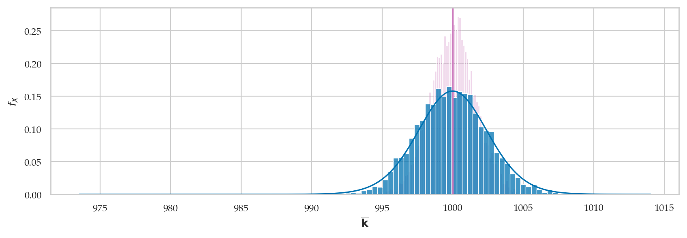
### combined histogram
from scipy.stats import norm
data1 = norm(100,50).rvs(1000)
data2 = norm(120,50).rvs(2000)
df = pd.concat(axis=0, ignore_index=True, objs=[
pd.DataFrame.from_dict({'value': data1, 'name': 'data1'}),
pd.DataFrame.from_dict({'value': data2, 'name': 'data2'})
])
fig, ax = plt.subplots()
sns.histplot(data=df, bins=20, stat="density", common_norm=False, x='value',
hue='name', multiple='dodge',ax=ax)
<AxesSubplot: xlabel='value', ylabel='Density'>
{kind=link}
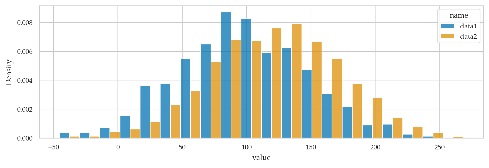
Bootstrapped sampling distribution of the sample median (optional)#
# np.random.seed(49)
kmedians_boot = gen_boot_dist(ksample02, estfunc=np.median)
sns.histplot(kmedians_boot)
<AxesSubplot: ylabel='Count'>
{kind=link}
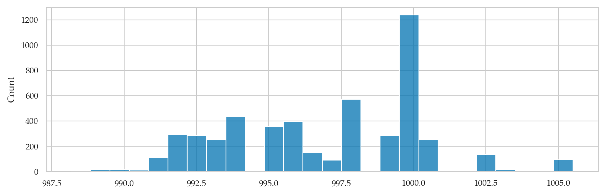
np.mean(kmedians_boot), np.std(kmedians_boot)
(996.980743, 3.3038099813625883)
kmedians_boot = gen_boot_dist(ksample02, estfunc=np.median)
CI_median_boot = [np.percentile(kmedians_boot,5),
np.percentile(kmedians_boot,95)]
CI_median_boot
[991.58, 1000.42]
# true
kmedians = gen_sampling_dist(rvK, estfunc=np.median, n=20)
[np.percentile(kmedians,5),
np.percentile(kmedians,95)]
[995.5339175170992, 1004.5206798298357]
Bonus estimators (median an percentile)#
Sampling distribution of sample median (optional)#
np.random.seed(44)
kmedians = gen_sampling_dist(rvK, estfunc=np.median, n=20)
ax = sns.histplot(kmedians, stat="density", bins=100)
ax.set_xlabel("Median(${\mathbf{k}}$)");
{kind=link}
Sampling distribution of 90th percentile (optional)#
def ninetypctile(sample):
return np.percentile(sample, 90)
ninetypctiles = gen_sampling_dist(rvK, estfunc=ninetypctile, n=20)
ax = sns.histplot(ninetypctiles, stat="density", bins=100)
_ = ax.set_xlabel("90$^\mathrm{th}$ percentile of ${\mathbf{n}}$")
{kind=link}
Example diff betweeen known Normals#
# example parameters for each group
muA, sigmaA = 300, 10
muB, sigmaB = 200, 20
# size of samples for each group
nA = 5
nB = 4
Particular value of the estimator dmeans#
xA = norm(muA, sigmaA).rvs(nA) # random sample from Group A
xB = norm(muB, sigmaB).rvs(nB) # random sample from Group B
d = dmeans(xA, xB)
d
89.77581641278658
The value of \(\hat{d}\) computed from the samples is an estimate for the difference between means of two groups: \(\Delta = \mu_A - \mu_{B}\) (which we know is \(100\) in this example).
# MAYBE USE IN EXERCISE
def gen_sampling_dist2(rvA, rvB, estfunc, nA, nB, N=1000):
stats = []
for i in range(0, N):
xA = rvA.rvs(nA)
xB = rvB.rvs(nB)
stat = estfunc(xA, xB)
stats.append(stat)
return stats
def get_sampling_dist(estfunc, meanA, stdA, nA, meanB, stdB, nB, N=1000):
"""
Obtain the sampling distribution of the statistic `estfunc`
from `N` random samples drawn from groups A and B with parmeters:
- Group A: `nA` values taken from `norm(meanA, stdA)`
- Group B: `nB` values taken from `norm(meanB, stdB)`
"""
stats = []
for i in range(0, N):
xA = norm(meanA, stdA).rvs(nA) # random sample from Group A
xB = norm(meanB, stdB).rvs(nB) # random sample from Group B
stat = estfunc(xA, xB) # evaluate `estfunc`
stats.append(stat) # record the value of estfunc
return stats
# Generate the sampling distirbution for dmeans
dmeans_sdist = get_sampling_dist(estfunc=dmeans,
meanA=muA, stdA=sigmaA, nA=nA,
meanB=muB, stdB=sigmaB, nB=nB)
print("Generated", len(dmeans_sdist), "values from `dmeans(XA, XB)`")
Generated 1000 values from `dmeans(XA, XB)`
# first 3 values
dmeans_sdist[0:3]
[94.85969872626583, 90.96751735263982, 93.14855520396037]
Plot the sampling distribution of dmeans#
ax3 = sns.histplot(dmeans_sdist, stat="density")
title3 = "Samping distribution of D = mean($\mathbf{X}_A$) - mean($\mathbf{X}_B$) " + \
"for samples of size $n_A$ = " + str(nA) + \
" from $\mathcal{N}$(" + str(muA) + "," + str(sigmaA) + ")" + \
" and $n_B$ = " + str(nB) + \
" from $\mathcal{N}$(" + str(muB) + "," + str(sigmaB) + ")"
_ = ax3.set_title(title3)
{kind=link}
Example 4: exponentially distributed population with known parameter#
# from scipy.stats import expon
# lam = 0.2
# rvE = expon(0,1/lam)
# plot_pdf(rvE)
def plot_errorbars(arg, **kws):
np.random.seed(sum(map(ord, "error_bars")))
x = np.random.normal(0, 1, 100)
f, axs = plt.subplots(2, figsize=(7, 2), sharex=True, layout="tight")
sns.pointplot(x=x, errorbar=arg, **kws, capsize=.3, ax=axs[0])
sns.stripplot(x=x, jitter=.3, ax=axs[1])
plot_errorbars("se", estimator="mean")
{kind=link}
import matplotlib.pyplot as plt
from scipy import stats
import numpy as np
conf_pinkman = stats.t.interval(1 - 0.05, 18 - 1, loc=96.2, scale= 4 / np.sqrt(18))
conf_white = stats.t.interval(1 - 0.05, 21 - 1, loc=99.1, scale= 3 / np.sqrt(21))
# plt.style.use('seaborn-whitegrid')
fig, ax = plt.subplots(figsize=(5, 2))
ax.errorbar(99.1, 1, xerr=(conf_white[1] - conf_white[0]) / 2,
fmt='o', markersize=8, capsize=5, label='Mr. White\'s', color='grey')
ax.errorbar(96.2, 0, xerr=(conf_pinkman[1] - conf_pinkman[0]) / 2,
fmt='o', markersize=8, capsize=5, label='Mr. Pinkman\'s', color='k')
ax.set_ylim(-0.6, 1.6)
ax.fill_betweenx([1, 0], conf_white[0], conf_pinkman[1], facecolor='lightgrey', alpha=0.3)
ax.legend(loc='best', fontsize=11, framealpha=1, frameon=True)
ax.set_xlabel('Purity (%)', fontsize=12)
ax.yaxis.set_major_formatter(plt.NullFormatter())
fig.tight_layout();
{kind=link}
Example 2: generating observations from the geometric distribution#
Suppose we want to generate random observations from the geometrically distributed random variable \(G \sim \textrm{Geom}(p=0.2)\), which corresponds to the waiting time until first success in repeated sequence of Bernoulli trials, where each trials has probability \(p=0.2\) of success.
The function gen_g defined below is a generator of observations from the random variable \(G\).
import random
from scipy.stats import geom
rvG = geom(p=0.2)
def gen_g(p):
u = random.random()
for k in range(1, 100):
if u <= rvG.cdf(k):
return k
To generate a random observation from \(B \sim \textrm{Bernoulli}(p=0.3)\),
we simply need to call the function gen_b with the keyword argument p=0.3.
gen_g(p=0.2)
1
Let’s now generates n=1000 observations from \(G \sim \textrm{Geom}(p=0.2)\).
n = 1000
gsample = [gen_g(p=0.2) for i in range(0,n)]
sns.histplot(gsample)
<AxesSubplot: ylabel='Count'>
{kind=link}
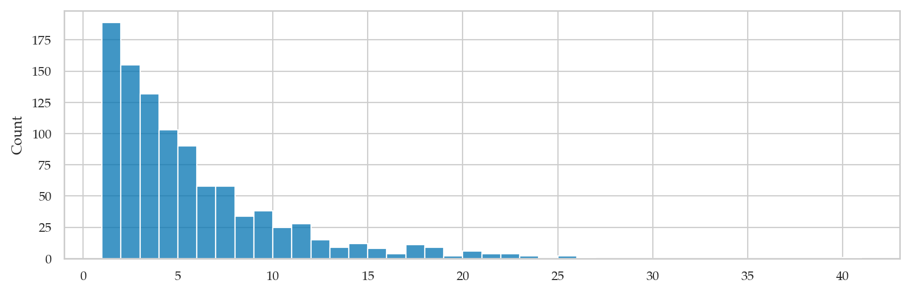
Annotations on plot#
import seaborn as sns
sns.set_style("whitegrid")
tips = sns.load_dataset("tips")
sat_mean = tips.loc[tips['day'] == 'Sat']['total_bill'].mean()
ax = sns.stripplot(x="day", y="total_bill", data=tips)
ax.annotate("Saturday\nMean",
xy=(2, sat_mean), xycoords='data',
xytext=(.1, .5), textcoords='axes fraction',
horizontalalignment="center",
arrowprops=dict(arrowstyle="->",
connectionstyle="arc3"),
bbox=dict(boxstyle="round", fc="w"),
)
Text(0.1, 0.5, 'Saturday\nMean')
{kind=link}
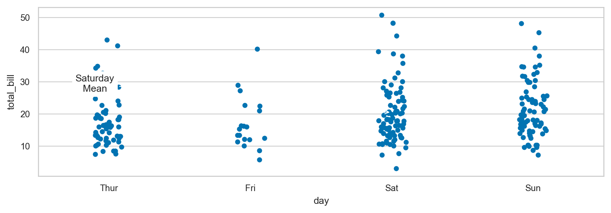
Example 1: Samples from a uniform distribution#
from scipy.stats import uniform
# define a uniform random variable
rv1 = uniform(0, 1)
mu1 = rv1.mean() # 𝜇1 (mu)
sigma1 = rv1.std() # 𝜎1 (sigma)
# plot data from 30 samples of size 10
N = 30
n = 10
plt.xlim(-0.1, 1.1)
for i in range(0, N):
sample1 = rv1.rvs(n)
sns.stripplot(x=sample1)
{kind=link}
Sampling distribution of the mean#
from ministats import gen_sampling_dist
# compute the sampling distribution for samples of size n
mean_sdist_data1 = gen_sampling_dist(rv1, mean, n, N=10000)
# plot a histogram of the sampling distribution
plt.xlim(-0.1, 1.1)
ax = sns.histplot(mean_sdist_data1, kde=False)
# stat="density"
ax.set(yticklabels=[])
_ = ax.set_title("Samping distribution of mean($\mathbf{X}$) for samples "
"of size $n$ = " + str(n) + ' from Uniform(0,1).')
{kind=link}
xbar_mu = np.mean(mean_sdist_data1)
xbar_std = np.std(mean_sdist_data1, ddof=1)
print("The sampling distribution has mean", round(xbar_mu,2),
"\nand the standard error is", round(xbar_std,5))
The sampling distribution has mean 0.5
and the standard error is 0.09149
# CLT prediction about standard error:
sigma1/np.sqrt(n)
0.09128709291752768
Example 2: Samples from a normal distribution#
from scipy.stats import norm
# define a normal random variable
mu2 = 1000 # 𝜇2 (mu)
sigma2 = 100 # 𝜎2 (sigma)
rv2 = norm(mu2, sigma2)
# plot data from 30 samples of size 10
N = 30
n = 10
plt.xlim(700,1300)
for i in range(0, N):
sample2 = rv2.rvs(n)
sns.stripplot(x=sample2)
{kind=link}
Sampling distribution of the mean#
# compute the sampling distribution for samples of size n
mean_sdist_data2 = gen_sampling_dist(rv2, mean, n, N=10000)
# plot a histogram of the sampling distribution
ax = sns.histplot(mean_sdist_data2, kde=False)
ax.set(yticklabels=[])
plt.xlim(700,1300)
_ = ax.set_title("Samping distribution of mean($\mathbf{X}$) for samples of size "
"$n$ = " + str(n) + ' from $\mathcal{N}('+ str(mu2) + ',' + str(sigma2) + ')$')
{kind=link}
xbar_mu = np.mean(mean_sdist_data2)
xbar_std = np.std(mean_sdist_data2, ddof=1)
print("The sampling distribution has mean", round(xbar_mu,2),
"\nand the standard error is", round(xbar_std,2))
The sampling distribution has mean 1000.33
and the standard error is 31.92
# CLT prediction about standard error:
sigma2/np.sqrt(n)
31.622776601683793
from scipy.stats import t
fig, ax = plt.subplots()
# for df in [2,5,10,100]:
df = 5
rvT = t(df)
xmin, xmax = [-5,5]
xs = np.linspace(xmin, xmax, 1000)
fXs = rvT.pdf(xs)
# sns.lineplot(x=xs, y=fXs, ax=ax, linestyle='--', label="lkj")
ax = plot_pdf(rvT, xlims=[-5,5], ax=ax, label="$\\nu={}$".format(df), linestyle=":")
{kind=link}
delta = 0.025
x = np.arange(-3.0, 3.0, delta)
y = np.arange(-2.0, 2.0, delta)
X, Y = np.meshgrid(x, y)
Z1 = np.exp(-X**2 - Y**2)
Z2 = np.exp(-(X - 1)**2 - (Y - 1)**2)
Z = (Z1 - Z2) * 2
fig, ax = plt.subplots(1, 1)
CS = ax.contour(X, Y, Z, 6, colors='k')
ax.clabel(CS, fontsize=9, inline=True)
ax.set_title('Default negative contours')
Text(0.5, 1.0, 'Default negative contours')
{kind=link}
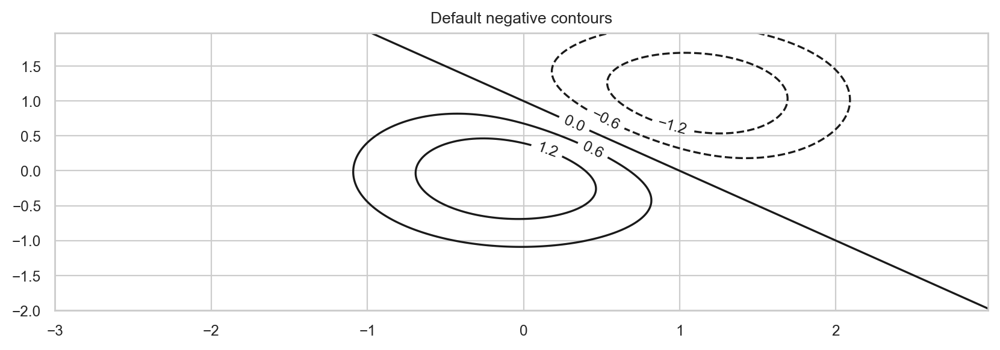
# # stats
# mean, var, skew, kurt = rvF.stats(moments='mvsk')
# mean, var, skew, kurt
Why do we need probability theory in statistics?#
Probability theory provides us with some essential tools needed for statistics:
modelling: describe a population as a probability distribution
sampling distributions: distributions obtained for random samples from a population
Additionally, artificially introduced randomness is the basis for two of the most important statistics “kung fu” techniques:
random selection = if you collect a sample of size n randomly selected from a population, then compute statistics from the sample, you can then make inferences about the whole population.
random assignment = create two roughly equivalent groups by randomly assigning participants into group A or group B. This random split is the basis for a statistical experiment that compares an intervention group and a control group. Given the participants were randomly assigned to the two groups, we can hope they are roughly equally distributed on all dimensions (similar distribution of all confounding variables), so that any differences observed between groups can be attributed to the intervention. Calculating the difference statistic intervention-control give an estimate of the effect size of this intervention.
CUT MATERIAL from 21_prob_theory.ipynb#
Computing prob integrals using quad#
Uniform#
def fU(u):
if 0 <= u and u <= 1:
return 1.0
else:
return 0.0
from scipy.integrate import quad
quad(fU, -10, 10)[0]
0.9999999999999999
quad(fU, 0.2, 0.5)[0]
0.3
Normal#
mu = 1000
sigma = 100
def fN(n):
z = (n - mu)/sigma
C = sigma * np.sqrt(2*np.pi)
return 1 / C * np.exp(-1/2 * z**2)
quad(fN, 0, 2000)[0]
1.0000000000000002
We’re using limits of integration 0 and 2000 because that function is practically zero outside this range, and function quad needs finite limits of integration to work properly.
quad(fN, 800, 900)[0]
0.13590512198327784
Computing prob integrals using trapz#
from scipy.integrate import trapz
m = 1000
ns = np.linspace(800, 900, m)
fNs = fN(ns)
trapz(fNs, ns)
0.1359051331713763
# how different
quad(fN, 800, 900)[0] - trapz(fNs, ns)
-1.118809847544533e-08
Using prob models#
# uniform distribution U(0,1)
from sympy import symbols, integrate, Integral, simplify
x, a, b = symbols('x a b')
fU = 1
simplify( integrate(fU, (x,a,b)) )
Integral(fU, x)
Integral(fU, x).doit()
Random process examples using Python (bonus material)#
Let’s look at some simple examples of two random events: a coin flip and a die roll.
We’ll use the Python module random to generate random numbers.
import random
random.random() # random number between 0 (inclusive) and 1 (non-inclusive)
0.43978308942595656
Coin flip example#
The code example below shows a function that performs the equivalent of a coin flip.
def flip_coin():
r = random.random() # a number in the range [0,1)
if r < 0.5:
return "heads"
else:
return "tails"
flip_coin()
'tails'
Flipping a coin many times#
Let’s see what happens if we flip the coin many times.
flips = [flip_coin() for _ in range(0, 2000)]
heads = [flip for flip in flips if flip == "heads"]
len(heads)/len(flips)
# plot a horizontal bar chart of the number of outcomes
s = pd.Series(flips)
print(s.value_counts().sort_index())
s.value_counts().sort_index().plot(kind="barh")
{kind=link}
Six-sided die example#
def roll_die():
r = random.random()*6 # a number in the range [0,6)
rint = int(r) # convert to integer in {0,1,2,3,4,5}
value = rint + 1 # convert to integer in {1,2,3,4,5,6}
return value
roll_die()
2
Let’s see what happens if we roll the die many times.
rolls = [roll_die() for _ in range(0, 6000)]
ds = pd.Series(rolls)
print(ds.value_counts().sort_index())
ds.value_counts().sort_index().plot(kind="bar")
{kind=link}
Example 3: Coin flip#
Consider the random variable \(C\) that describes the outcome of a coin flip for a balanced (fair) coin. The sample space for the random variable \(C\) is \(\{\texttt{heads}, \texttt{tails}\}\).
The probability mass function is $\( f_C(\texttt{heads}) = 0.5 \quad \textrm{and} \quad f_C(\texttt{tails}) = 0.5. \)$
# define the computer model `rvC` for the random variable C
from scipy.stats import randint
rvC = randint(0, 2)
# print the values of the probability mass function
for c in range(0,2):
print(c, rvC.pmf(c))
0 0.5
1 0.5
Example 4: Rolling a six-sided die#
The random outcome that occurs when we roll a six-sided die can be described as a random variable \(D\) which has the sample space \(\{1, 2, 3, 4, 5, 6\}\). If we assume the die is fair, then each of the outcomes will have equal weight, so the probability mass function \(f_D\) has the following values:
# define the computer model `rvD` for the random variable D
rvD = randint(1, 7)
# print the values of probability mass function
for d in range(1,7):
print(d, rvD.pmf(d))
1 0.16666666666666666
2 0.16666666666666666
3 0.16666666666666666
4 0.16666666666666666
5 0.16666666666666666
6 0.16666666666666666
Intentionally skipped#
rvN = norm(1000,10)
rvN.moment(1) # = rvN.mean()
1000.0
# Let's verify the formula:
# E[(x-𝜇)^2] = E[X^2] - E[X]^2
# second moment first moment squared
rvN.var() == rvN.moment(2) - rvN.moment(1)**2
True
from scipy.stats import norm
# 1. choose the parameters:
mean = 1000 # 𝜇 (mu) = where is its center?
std = 100 # 𝜎 (sigma) = how spread out is it?
# 2. create a normal random variable
rvN = norm(mean, std)
# 3. plot it's probability density function (pdf)
x = np.linspace(rvN.ppf(0.001), rvN.ppf(0.999), 10000)
y = rvN.pdf(x)
ax = sns.lineplot(x=x, y=y)
title = 'Probability density for the normal distribution $\mathcal{N}('+ str(mean) + ',' + str(std) + ')$'
ax.set_title(title)
ax.set_xlim(300,1700)
plt.xticks(np.arange(400,1700,100))
_ = ax.set_ylim(0, 0.006)
{kind=link}
rvN.entropy()
6.024108719192764
0.5*np.log(2*np.pi*sigma**2) + 0.5
6.024108719192764
EARLY ATTEMPTS AT EXPECTATIONS CALCULATIONS#
from sympy import Rational, symbols
u = symbols('u')
integrate( (u-Rational(1,2))**2, (u,0,1) )
from scipy.stats import uniform
xs = np.linspace(0, 1, 1000)
rvU = uniform(0, 1)
from scipy.integrate import trapz
# mean
y1 = xs*rvU.pdf(xs)
mu = trapz(y1, xs)
mu
0.5
# variance
y2 = (xs-mu)**2 * rvU.pdf(xs)
sigma2 = trapz(y2, xs)
sigma2
0.08333350033383399
rvU.var()
0.08333333333333333
Alt#
from scipy.stats import uniform
rvU = uniform(0, 1)
def xpU(x):
return x*rvU.pdf(x)
quad(xpU, 0, 1)[0]
0.5
def xpU(x):
muX = rvU.mean()
return x*rvU.pdf(x)
quad(xpU, 0, 1)[0]
0.5
from scipy.integrate import simpson
xs = np.linspace(0, 1, 1000)
rvU = uniform(0, 1)
simpson(xs*rvU.pdf(xs), xs)
0.49999999999999994
Example probability calculation#
What is the probability of observing a value between 800 and 900.
from ministats import calc_prob_and_plot
from scipy.stats import norm
rvN = norm(1000, 100)
from scipy.integrate import quad
# Pr(800 < X < 900) = integral of f_X between 800 and 900
quad(rvN.pdf, 800, 900)[0]
0.13590512198327784
calc_prob_and_plot(rvN, 600, 1000)
(0.49996832875816705,
<AxesSubplot: title={'center': 'Probability density for the random variable norm(1000, 100) between 600 and 1000'}>)
{kind=link}
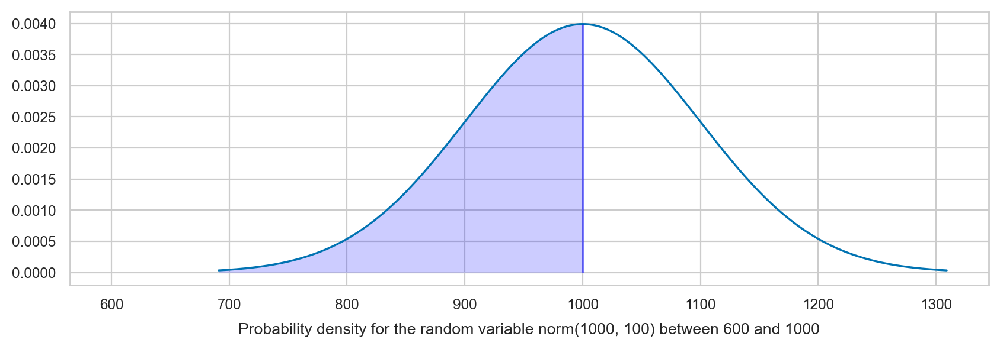
# what type of object is rvH?
from scipy.stats import poisson
rvH = poisson(20)
type(rvH)
scipy.stats._distn_infrastructure.rv_discrete_frozen
The above line tells us some information about the internal implementation of the Python object rvH,
which is the Python implementation of the random variable \(H \sim \textrm{Pois}(20)\).
The rvH object is an instance of the class rv_frozen (frozen random variable).
Ignore the frozen part. The key part is that it’s a random variable.
Beta function#
from scipy.special import beta as betaf
betaf(1,1)
1.0
betaf(2,1)
0.5
betaf(3,2)
0.08333333333333333
# # Graph of betaf
# x = np.linspace(0.05, 5, 100)
# y = np.linspace(0.05, 5, 100)
# X, Y = np.meshgrid(x, y)
# Z = betaf(X, Y)
# # Controur plot
# # plt.contour(X, Y, Z)
# # 3D surface plot
# fig = plt.figure(figsize=(6,6))
# ax = fig.add_subplot(111, projection='3d')
# ax.plot_surface(X, Y, Z)
Kombucha-temperature dependence#
Kombuncha production dataset story#
Let’s say have collected the data from the kombucha bottling plant from past month. You have a sample of \(m=1000\) observations of two variables:
t: the temperature in Cn: the volume of kombucha that went into the bottle
You have a suspicion that the bottling temperature might be causing a variation in the volume.
You want to use “data science” to check if a relationship between \(t\) and \(n\) exists, and if it exists you want to use it to your advantage to improve the reliability of the kombucha bottling process.
Recall that your distributor only pays for bottles that are within “spec” (mean of 1000 +/- 2 times std = \([800,1200]\)), and the current bottling process only produces “up to spec” bottles only … percent of the time.
If there is a relationship between temperature t and bottled volume n then we should be able to find it if we collect lots of (t,n) data observations from the bottling process.
from scipy.stats import norm
m = 700
# temperature is normally distrubted around 20 with std 2
rvT = norm(20,2)
ts = rvT.rvs(m)
# kombucha volume normally distr
meanN = 1000 + (ts-rvT.mean())*35
sigmaN = 75
rvN = norm(meanN, sigmaN)
ns = rvN.rvs(m)
# sns.displot(x=ns, y=ts)
kprod = pd.DataFrame({"t":ts, "n":ns})
sns.displot(data=kprod, x="n", y="t")
<seaborn.axisgrid.FacetGrid at 0x12ec93eb0>
{kind=link}
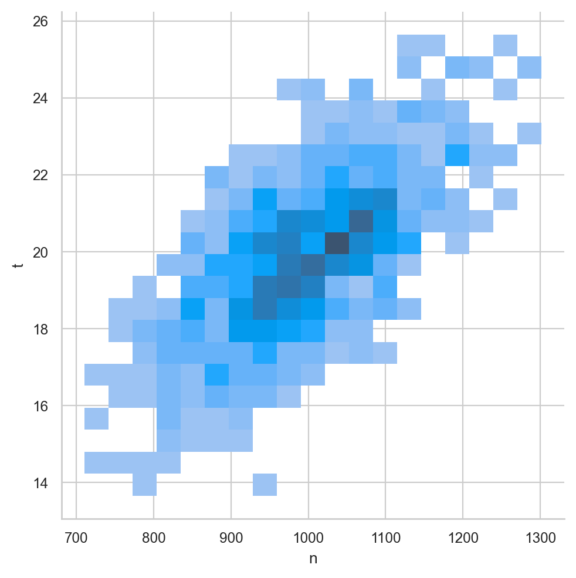
# check data
# ns.shape
# kprod["t"]
# kprod["n"] # came from the numpy array `ns`
kprod["n"].std()
102.96028452378567
kprod["n"].mean()
994.9137217254039
# # save data to kprod.csv
# kprod.to_csv("../datasets/kprod.csv")
kprod = pd.read_csv("../datasets/cut_material/kprod.csv")
kprod
| Unnamed: 0 | t | n | |
|---|---|---|---|
| 0 | 0 | 20.993428 | 995.565764 |
| 1 | 1 | 19.723471 | 1068.997191 |
| 2 | 2 | 21.295377 | 992.512421 |
| 3 | 3 | 23.046060 | 1000.977493 |
| 4 | 4 | 19.531693 | 866.862076 |
| ... | ... | ... | ... |
| 695 | 695 | 19.380907 | 992.182772 |
| 696 | 696 | 20.652266 | 921.794840 |
| 697 | 697 | 17.497773 | 839.550997 |
| 698 | 698 | 21.848054 | 1154.712934 |
| 699 | 699 | 19.630196 | 937.789780 |
700 rows × 3 columns
kprod.describe()
| Unnamed: 0 | t | n | |
|---|---|---|---|
| count | 700.00000 | 700.000000 | 700.000000 |
| mean | 349.50000 | 19.983708 | 1005.090754 |
| std | 202.21688 | 1.971220 | 100.728083 |
| min | 0.00000 | 13.517465 | 619.673850 |
| 25% | 174.75000 | 18.610773 | 937.563085 |
| 50% | 349.50000 | 19.997141 | 1002.065427 |
| 75% | 524.25000 | 21.266132 | 1073.863544 |
| max | 699.00000 | 27.705463 | 1431.935309 |
Plots inspired by seaborn docs#
# penguins = sns.load_dataset("penguins")
sns.displot(data=kprod, x="n", y="t")
<seaborn.axisgrid.FacetGrid at 0x1302a5f40>
{kind=link}
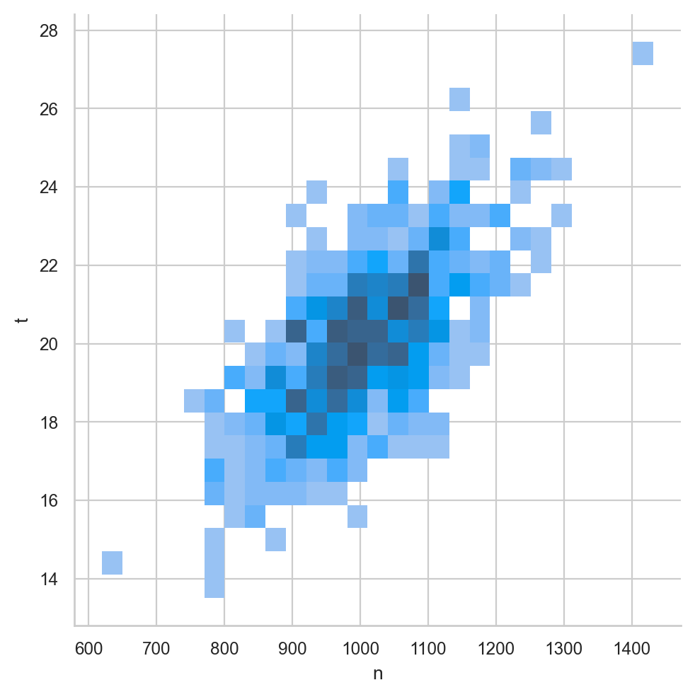
sns.displot(data=kprod, x="n", y="t", kind="kde")
<seaborn.axisgrid.FacetGrid at 0x130318ac0>
{kind=link}
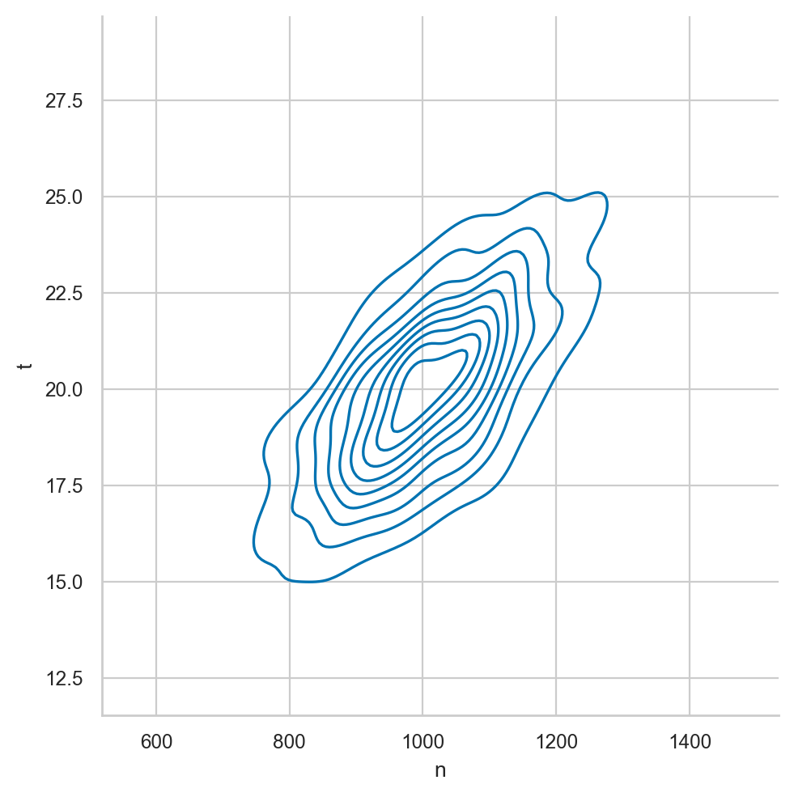
# # ALT 1. fewer levels
# sns.displot(data=kprod, x="n", y="t", kind="kde", thresh=.2, levels=4)
# # ALT 2. specific levels
# sns.displot(data=kprod, x="n", y="t", kind="kde", levels=[.01, .05, .1, .8])
sns.jointplot(data=kprod, x="n", y="t", kind="kde")
<seaborn.axisgrid.JointGrid at 0x130373250>
{kind=link}
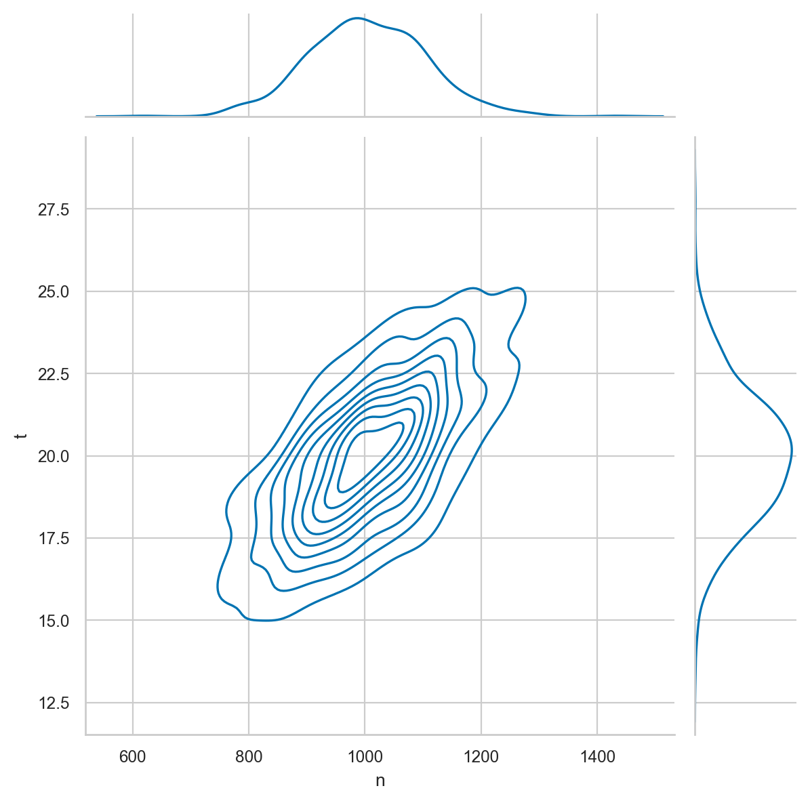
g = sns.JointGrid(data=kprod, x="n", y="t")
g.plot_joint(sns.histplot)
g.plot_marginals(sns.boxplot)
<seaborn.axisgrid.JointGrid at 0x13254c940>
{kind=link}
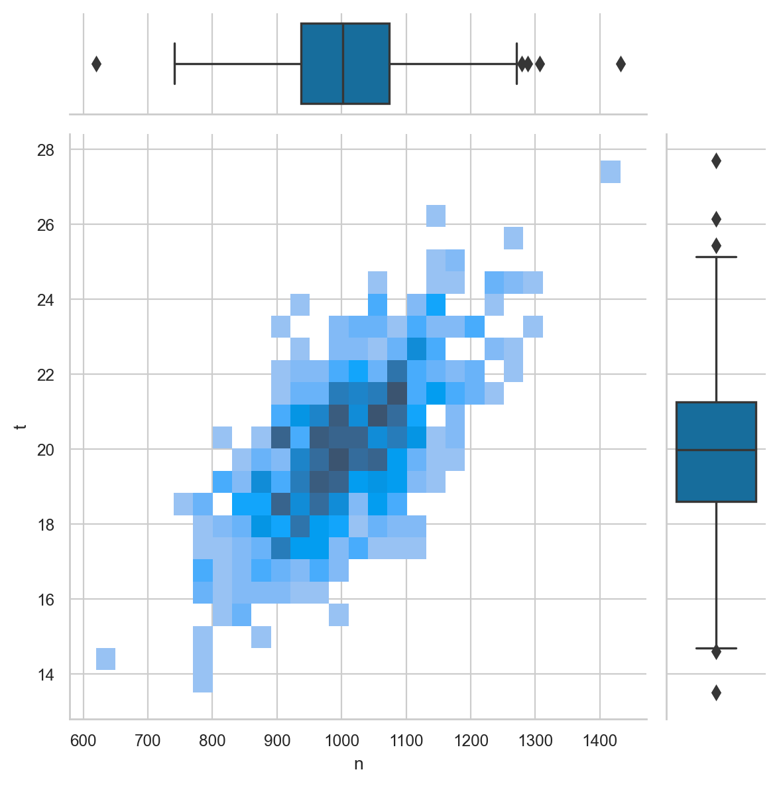
sns.displot(data=kprod, x="n", y="t", kind="kde",
rug=True, rug_kws={"alpha":0.2})
<seaborn.axisgrid.FacetGrid at 0x1326a6640>
{kind=link}
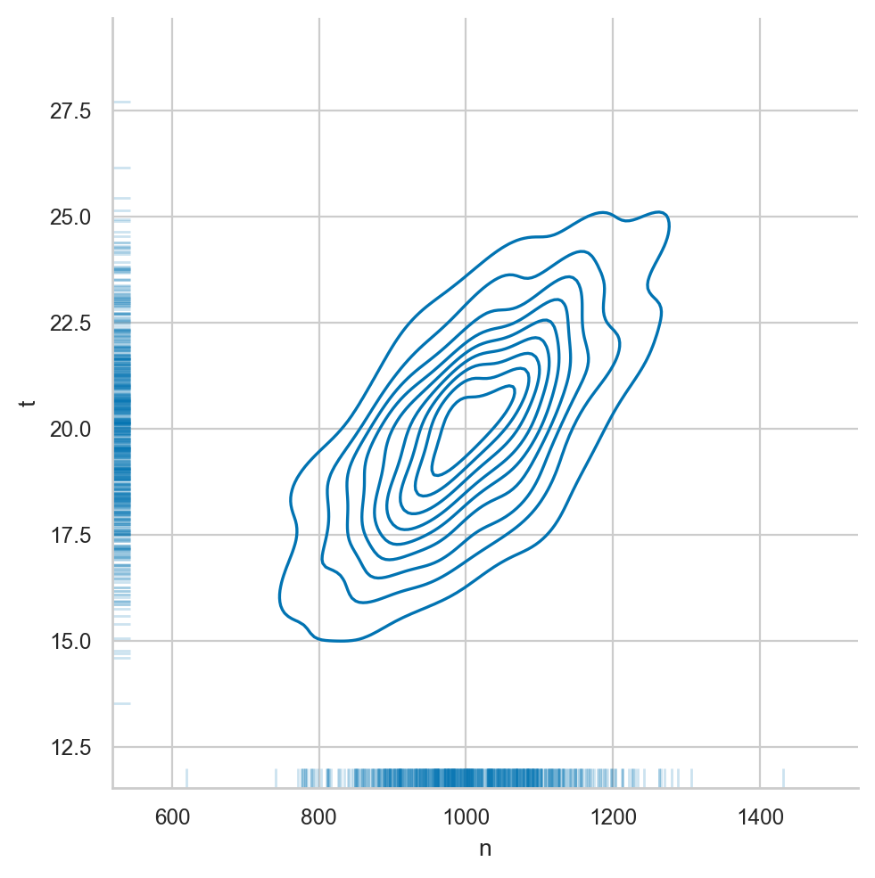
Other 3D and surface plot examples#
# via https://matplotlib.org/stable/gallery/mplot3d/polys3d.html
from matplotlib.collections import PolyCollection
import matplotlib.pyplot as plt
import numpy as np
from scipy.stats import poisson
# Fixing random state for reproducibility
np.random.seed(19680801)
def polygon_under_graph(x, y):
"""
Construct the vertex list which defines the polygon filling the space under
the (x, y) line graph. This assumes x is in ascending order.
"""
return [(x[0], 0.), *zip(x, y), (x[-1], 0.)]
ax = plt.figure().add_subplot(projection='3d')
x = np.linspace(0., 10., 31)
lambdas = range(1, 9)
# verts[i] is a list of (x, y) pairs defining polygon i.
verts = [polygon_under_graph(x, poisson.pmf(l, x)) for l in lambdas]
facecolors = plt.colormaps['viridis_r'](np.linspace(0, 1, len(verts)))
poly = PolyCollection(verts, facecolors=facecolors, alpha=.7)
ax.add_collection3d(poly, zs=lambdas, zdir='y')
ax.set(xlim=(0, 10), ylim=(1, 9), zlim=(0, 0.35),
xlabel='x', ylabel=r'$\lambda$', zlabel='probability')
plt.show()
{kind=link}
# verts[0]
# via https://problemsolvingwithpython.com/06-Plotting-with-Matplotlib/06.16-3D-Surface-Plots/
import numpy as np
import matplotlib.pyplot as plt
from mpl_toolkits.mplot3d import axes3d
# if using a Jupyter notebook, include:
%matplotlib inline
fig = plt.figure(figsize=(12,6))
ax1 = fig.add_subplot(121, projection='3d')
ax2 = fig.add_subplot(122, projection='3d')
x = np.arange(-5,5,0.1)
y = np.arange(-5,5,0.1)
X,Y = np.meshgrid(x,y)
Z = X*np.exp(-X**2 - Y**2)
# Plot a basic wireframe
ax1.plot_wireframe(X, Y, Z, rstride=10, cstride=10)
ax1.set_title('row step size 10, column step size 10')
ax2.plot_wireframe(X, Y, Z, rstride=20, cstride=20)
ax2.set_title('row step size 20, column step size 20')
plt.show()
{kind=link}
# via https://problemsolvingwithpython.com/06-Plotting-with-Matplotlib/06.14-Contour-Plots/
import numpy as np
import matplotlib.pyplot as plt
# if using a Jupyter notebook, include:
%matplotlib inline
x = np.arange(0, 10.0, 0.01)
y = np.arange(0, 10.0, 0.01)
X, Y = np.meshgrid(x, y)
Z = np.sin(X)*np.cos(Y)
fig, ax = plt.subplots(figsize=(6,6))
# ax.contourf(X,Y,Z)
ax.contour(X,Y,Z)
plt.show()
{kind=link}
# via https://stackoverflow.com/questions/16024677/generate-correlated-data-in-python-3-3
import numpy as np
import matplotlib.pyplot as plt
num_samples = 400
# The desired mean values of the sample.
mu = np.array([5.0, 0.0, 10.0])
# The desired covariance matrix.
r = np.array([
[ 3.40, -2.75, -2.00],
[ -2.75, 5.50, 1.50],
[ -2.00, 1.50, 1.25]
])
# Generate the random samples.
rng = np.random.default_rng()
y = rng.multivariate_normal(mu, r, size=num_samples)
# Plot various projections of the samples.
plt.subplot(2,2,1)
plt.plot(y[:,0], y[:,1], 'b.', alpha=0.25)
plt.plot(mu[0], mu[1], 'ro', ms=3.5)
plt.ylabel('y[1]')
plt.axis('equal')
plt.grid(True)
plt.subplot(2,2,3)
plt.plot(y[:,0], y[:,2], 'b.', alpha=0.25)
plt.plot(mu[0], mu[2], 'ro', ms=3.5)
plt.xlabel('y[0]')
plt.ylabel('y[2]')
plt.axis('equal')
plt.grid(True)
plt.subplot(2,2,4)
plt.plot(y[:,1], y[:,2], 'b.', alpha=0.25)
plt.plot(mu[1], mu[2], 'ro', ms=3.5)
plt.xlabel('y[1]')
plt.axis('equal')
plt.grid(True)
plt.show()
{kind=link}
import numpy as np
import matplotlib.pyplot as plt
linalg = np.linalg
np.random.seed(1)
num_samples = 1000
num_variables = 2
cov = [[0.3, 0.2], [0.2, 0.2]]
L = linalg.cholesky(cov)
# print(L.shape)
# (2, 2)
uncorrelated = np.random.standard_normal((num_variables, num_samples))
mean = [1, 1]
correlated = np.dot(L, uncorrelated) + np.array(mean).reshape(2, 1)
# print(correlated.shape)
# (2, 1000)
plt.scatter(correlated[0, :], correlated[1, :], c='green')
plt.show()
{kind=link}
# via https://stackoverflow.com/questions/16024677/generate-correlated-data-in-python-3-3
import numpy as np
import matplotlib.pyplot as plt
import scipy.stats as stats
linalg = np.linalg
np.random.seed(1)
num_samples = 1000
num_variables = 2
cov = [[1.0, 0.2], [0.2, 1.0]]
L = linalg.cholesky(cov)
rhos = []
for i in range(1000):
uncorrelated = np.random.standard_normal((num_variables, num_samples))
correlated = np.dot(L, uncorrelated)
X, Y = correlated
rho, pval = stats.pearsonr(X, Y)
rhos.append(rho)
plt.hist(rhos)
plt.show()
{kind=link}
# via https://stackoverflow.com/questions/38698277/plot-normal-distribution-in-3d
import numpy as np
import matplotlib.pyplot as plt
from scipy.stats import multivariate_normal
from mpl_toolkits.mplot3d import Axes3D
#Parameters to set
mu_x = 0
variance_x = 3
mu_y = 0
variance_y = 15
#Create grid and multivariate normal
x = np.linspace(-10,10,500)
y = np.linspace(-10,10,500)
X, Y = np.meshgrid(x,y)
pos = np.empty(X.shape + (2,))
pos[:, :, 0] = X
pos[:, :, 1] = Y
rv = multivariate_normal([mu_x, mu_y], [[variance_x, 0], [0, variance_y]])
#Make a 3D plot
fig = plt.figure()
ax = plt.axes(projection='3d')
ax.plot_surface(X, Y, rv.pdf(pos), cmap='Greys', linewidth=0)
ax.set_xlabel('X axis')
ax.set_ylabel('Y axis')
ax.set_zlabel('$p_{XY}$ axis')
plt.show()
{kind=link}
pos.shape
(500, 500, 2)
rv.pdf(pos).shape
(500, 500)
#https://docs.scipy.org/doc/scipy/reference/generated/scipy.stats.multivariate_normal.html#scipy.stats.multivariate_normal
from scipy.stats import multivariate_normal
x = np.linspace(0, 5, 10, endpoint=False)
y = multivariate_normal.pdf(x, mean=2.5, cov=0.5)
fig1 = plt.figure()
ax = fig1.add_subplot(111)
ax.plot(x, y)
[<matplotlib.lines.Line2D at 0x132bc6940>]
{kind=link}
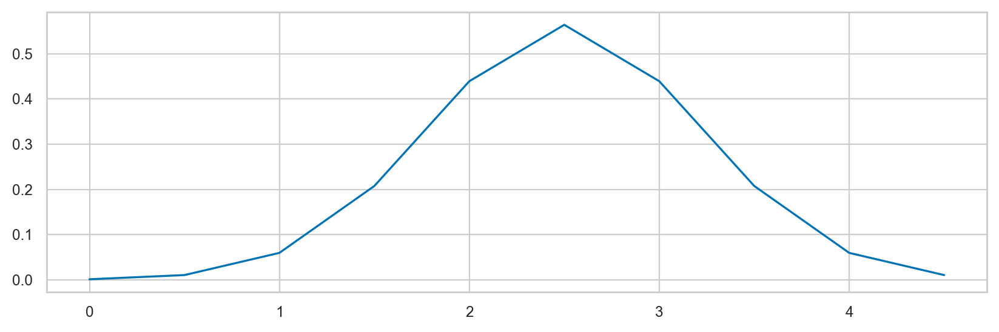
x, y = np.mgrid[-1:1:.01, -1:1:.01]
pos = np.dstack((x, y))
mu = [0.5, -0.2]
Sigma = [[2.0, 0.7], [0.7, 0.5]]
rv = multivariate_normal(mu, Sigma)
fig2 = plt.figure()
ax2 = fig2.add_subplot(111)
ax2.contourf(x, y, rv.pdf(pos))
<matplotlib.contour.QuadContourSet at 0x132c652e0>
{kind=link}
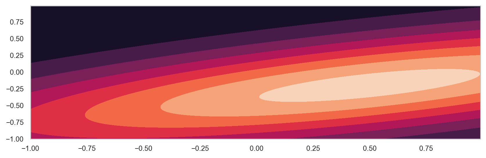
rv.pdf(pos)
array([[0.10948266, 0.11064805, 0.11178199, ..., 0.00045415, 0.00042486,
0.0003973 ],
[0.10988591, 0.11107083, 0.11222452, ..., 0.00046831, 0.00043817,
0.00040981],
[0.11027983, 0.11148431, 0.11265774, ..., 0.00048287, 0.00045186,
0.00042267],
...,
[0.03403147, 0.03533639, 0.03667695, ..., 0.02904694, 0.02791839,
0.02682317],
[0.03350345, 0.0347929 , 0.0361178 , ..., 0.02938003, 0.02824242,
0.02713821],
[0.03298039, 0.03425441, 0.03556368, ..., 0.02971402, 0.0285674 ,
0.02745425]])
sns.histplot(x=x[0], y=y[0])
<AxesSubplot: >
{kind=link}
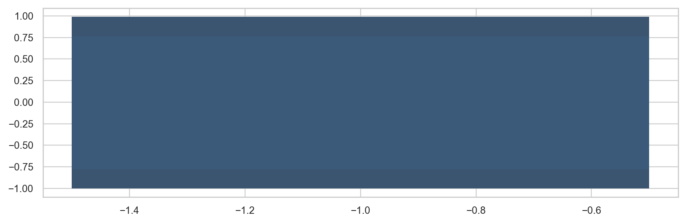
# via http://cxhernandez.com/tutorials/dataviz/2014/11/19/jointplot-d3.html
from matplotlib import pyplot as plt
from matplotlib import gridspec
def gen_cov(n):
A = np.random.rand(n, n)
return np.dot(A, A.T)
n = 2
m = 2
mu = list(map(lambda x: np.random.normal(size = x)*np.random.randint(1,11) + np.random.normal(size = x), n*[m]))
sigma = list(map(gen_cov, n*[m]))
N = 500
data = np.vstack(
list(
map(
lambda i: np.random.multivariate_normal(mu[i], sigma[i], N),
range(n)
)
)
).T
xmin, ymin = data.min(axis=1)
xmax, ymax = data.max(axis=1)
xmax, xmin = tuple(np.array([xmax, xmin]) + 0.25*(xmax - xmin)*np.array([1, -1]))
ymax, ymin = tuple(np.array([ymax, ymin]) + 0.25*(ymax - ymin)*np.array([1, -1]))
#Define grid for subplots
gs = gridspec.GridSpec(2, 2, width_ratios=[3, 1], height_ratios = [1, 4])
#Create scatter plot
fig = plt.figure()
ax = plt.subplot(gs[1, 0])
cax = ax.scatter(data[0], data[1], color='darkred', alpha=.4)
#Turn off all axes
_=ax.axis('off')
#Create Y-marginal (right)
axr = plt.subplot(gs[1, 1], sharey=ax, xticks=[], yticks=[],frameon = False, xlim=(0, 1), ylim = (ymin, ymax))
axr.hist(data[1], color = '#5673E0', orientation = 'horizontal', density = True)
#Create X-marginal (top)
axt = plt.subplot(gs[0,0], sharex=ax,frameon = False, xticks = [], yticks = [], xlim = (xmin, xmax), ylim=(0, 1))
axt.hist(data[0], color = '#5673E0', density = True)
#Bring the marginals closer to the scatter plot
fig.tight_layout(pad = 1)
{kind=link}
from matplotlib import cm
from scipy.stats import gaussian_kde
#KDE for top marginal
kde_X = gaussian_kde(data[0])
#KDE for right marginal
kde_Y = gaussian_kde(data[1])
#KDE for contour plot
kde_XY = gaussian_kde(data)
# Create two 1D grid with 100 points in each dimension
x = np.linspace(xmin, xmax, 100)
y = np.linspace(ymin, ymax, 100)
# Create a regular 2D grid with 100 points in each dimension
xi, yi = np.mgrid[xmin:xmax:100j, ymin:ymax:100j]
coords = np.vstack([item.ravel() for item in [xi, yi]])
# Evaluate the KDEs on a 1D grid
dx = kde_X(x) # X-marginal density
dy = kde_Y(y) # Y-marginal density
# Evaluate the KDE on a 2D grid
density = kde_XY(coords).reshape(xi.shape) # Bivariate density
#Set style to white
sns.set_style('white')
#Define grid for subplots
gs = gridspec.GridSpec(2, 2, width_ratios=[3, 1], height_ratios=[1, 4])
#Create contour plot
fig = plt.figure()
ax = plt.subplot(gs[1,0])
# Filled Contour
cax = ax.contourf(density.T, origin = 'lower',
extent = (xmin, xmax, ymin, ymax),
cmap = "Greys") #coolwarm)
# Contour Lines
ax.contour(density.T, origin = 'lower',
extent = (xmin, xmax, ymin, ymax),
cmap = cm.bone)
# cbar = fig.colorbar(cax, location="bottom", panchor=(0,0), pad=0)
#Turn off all axes
ax.axis('off')
#Create Y-marginal (right)
axr = plt.subplot(gs[1,1], sharey = ax, xticks = [], yticks = [], frameon = False, xlim = (0, 1.4*dy.max()), ylim=(ymin, ymax))
axr.plot(dy, y, color = 'black')
axr.fill_betweenx(y, 0, dy, alpha = .75, color = 'gray')
#Create X-marginal (top)
axt = plt.subplot(gs[0,0], sharex = ax, frameon = False, xticks=[], yticks=[], xlim = (xmin, xmax), ylim=(0, 1.4*dx.max()))
axt.plot(x, dx, color = 'black')
axt.fill_between(x, 0, dx, alpha=.75, color = 'gray')
#Bring the marginals closer to the contour plot
fig.tight_layout(pad = 1)
{kind=link}
Coin tosses for n=100, n=1000, and n=10000#
import numpy as np
np.random.seed(15)
import pandas as pd
import matplotlib.pyplot as plt
from scipy.stats import randint
rvC = randint(0, 2)
filename = "figures/panel_n_coin_flips.pdf"
with plt.rc_context({"figure.figsize":(12,3)}):
fig, axs = plt.subplots(1, 3)
ax1, ax2, ax3 = axs
n = 100
flips = rvC.rvs(n)
s = pd.Series(flips).replace(1, "heads").replace(0, "tails")
# print(f"Case {n=}")
# print(s.value_counts().sort_index())
s.value_counts().sort_index().plot(kind="bar", rot=0, ax=ax1)
title1 = f"(a) Case $n={n}$"
ax1.set_title(title1, y=0, pad=-30)
sns.despine(top=True, right=True, ax=ax1)
n = 1000
flips = rvC.rvs(n)
s = pd.Series(flips).replace(1, "heads").replace(0, "tails")
# print(f"Case {n=}")
# print(s.value_counts().sort_index())
s.value_counts().sort_index().plot(kind="bar", rot=0, ax=ax2)
title2 = f"(b) Case $n={n}$"
ax2.set_title(title2, y=0, pad=-30)
sns.despine(top=True, right=True, ax=ax2)
n = 10000
flips = rvC.rvs(n)
s = pd.Series(flips).replace(1, "heads").replace(0, "tails")
# print(f"Case {n=}")
# print(s.value_counts().sort_index())
s.value_counts().sort_index().plot(kind="bar", rot=0, ax=ax3)
title3 = f"(c) Case $n={n}$"
ax3.set_title(title3, y=0, pad=-30)
sns.despine(top=True, right=True, ax=ax3)
fig.tight_layout()
fig.savefig(filename, dpi=300, bbox_inches="tight", pad_inches=0)
{kind=link}
Dice rolls 600 6000 60000#
import numpy as np
np.random.seed(5)
import pandas as pd
import matplotlib.pyplot as plt
from scipy.stats import randint
rvD = randint(1, 7)
filename = "figures/panel_n_dice_rolls.pdf"
with plt.rc_context({"figure.figsize":(12,3)}):
fig, axs = plt.subplots(1, 3)
ax1, ax2, ax3 = axs
n = 600
rolls = rvD.rvs(n)
ds = pd.Series(rolls)
# print(f"Case {n=}")
# print(ds.value_counts().sort_index())
ds.value_counts().sort_index().plot(kind="bar", ax=ax1)
title1 = f"(a) Case $n={n}$"
ax1.set_title(title1, y=0, pad=-30)
sns.despine(top=True, right=True, ax=ax1)
n = 6000
rolls = rvD.rvs(n)
ds = pd.Series(rolls)
# print(f"Case {n=}")
# print(ds.value_counts().sort_index())
ds.value_counts().sort_index().plot(kind="bar", ax=ax2)
title2 = f"(b) Case $n={n}$"
ax2.set_title(title2, y=0, pad=-30)
sns.despine(top=True, right=True, ax=ax2)
n = 60000
rolls = rvD.rvs(n)
ds = pd.Series(rolls)
# print(f"Case {n=}")
# print(ds.value_counts().sort_index())
ds.value_counts().sort_index().plot(kind="bar", ax=ax3)
title3 = f"(c) Case $n={n}$"
ax3.set_title(title3, y=0, pad=-30)
sns.despine(top=True, right=True, ax=ax3)
fig.tight_layout()
fig.savefig(filename, dpi=300, bbox_inches="tight", pad_inches=0)
{kind=link}
POC using X^2 + Y^2#
from matplotlib import gridspec
xmin = 0
xmax = 2000
ymin = 0
ymax = 20
# Create two 1D grid with 100 points in each dimension
x = np.linspace(xmin, xmax, 100)
y = np.linspace(ymin, ymax, 100)
X, Y = np.meshgrid(x,y)
Z = X**2 + 1000*Y**2
#Create contour plot
gs = gridspec.GridSpec(2, 2, width_ratios=[3, 1], height_ratios=[1, 4])
fig = plt.figure()
ax = plt.subplot(gs[1,0])
# Filled Contour
cax = ax.contourf(Z, origin = 'lower',
extent = (xmin, xmax, ymin, ymax),
cmap = "Greys")
{kind=link}
# # ALT1: generate N data points using rvs(N)
# N = 10000
# dfXY = pd.DataFrame(rvXY.rvs(N), columns=["x","y"])
# # controur plot
# sns.jointplot(data=dfXY, x="x", y="y",
# kind="kde")
# # countourf plot
# sns.kdeplot(data=dfXY, x="x", y="y",
# shade=True, shade_lowest=False)
a = np.array((1,2,3))
b = np.array((2,3,4))
np.dstack((a,b))
np.dstack((a,b)).shape
(1, 3, 2)
x, y = np.mgrid[-1:1:.01, -1:1:.01]
pos = np.dstack((x, y))
pos.shape
(200, 200, 2)